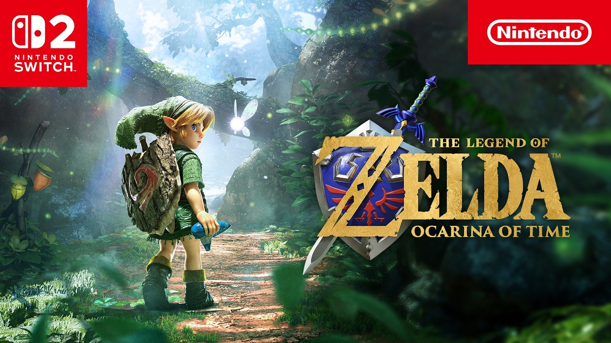

The Legend of Zelda: Ocarina of Time regresa con una nueva versión
Publicado el 17 de noviembre de 2026 | Nintendo

El regreso de un clásico de los videojuegos
The Legend of Zelda: Ocarina of Time es uno de los títulos más importantes de la historia de los videojuegos. Su lanzamiento original tuvo lugar en 1998 para Nintendo 64 y consiguió convertirse en una aventura muy recordada por los seguidores de la saga.
En 2026, Nintendo ha recuperado esta aventura con una nueva versión para Nintendo Switch 2. El objetivo es acercar esta historia a una nueva generación de jugadores, manteniendo los elementos que hicieron especial al original.
Una aventura por el reino de Hyrule
La historia sigue a Link, un joven héroe que debe detener los planes de Ganondorf, quien pretende conseguir la Trifuerza para dominar el mundo.
Acompañado por el hada Navi, Link recorrerá el reino de Hyrule, visitará diferentes lugares, explorará mazmorras y se enfrentará a numerosos enemigos. Durante su aventura tendrá que resolver puzles y utilizar diferentes objetos para avanzar.
Uno de los elementos más importantes es la posibilidad de viajar entre dos épocas distintas, jugando como Link niño y Link adulto. La ocarina también tendrá un papel fundamental, ya que sus melodías permiten activar acontecimientos y alterar el paso del tiempo.
¿Qué novedades incluye la versión de 2026?
La nueva edición para Nintendo Switch 2 incorpora una renovación visual completa y diferentes mejoras que modernizan la experiencia original.
- Gráficos y escenarios completamente renovados.
- Cinemáticas con doblaje de voz en español.
- Más diálogos y escenas ampliadas.
- Música orquestal renovada.
- Controles y movimientos mejorados.
- Una cámara más moderna y flexible.
Estos cambios permiten disfrutar de la aventura con una presentación más actual, sin perder la esencia del juego original.
Un lanzamiento con millones de jugadores
La llegada de Ocarina of Time a Nintendo Switch 2 ha despertado un enorme interés entre los seguidores de Nintendo. Muchos jugadores han querido volver a disfrutar de esta aventura, mientras que otros han tenido la oportunidad de descubrirla por primera vez.
Las cifras iniciales han sido especialmente destacadas. Según Nintendo, el juego superó los 5,2 millones de unidades vendidas en todo el mundo durante sus primeros cuatro días, contando las versiones físicas y digitales.
Ocarina of Time ha vuelto a demostrar la importancia de los grandes clásicos dentro de la industria del videojuego.
Este resultado lo convirtió en el juego publicado por Nintendo para Switch 2 con mejores ventas durante sus primeros cuatro días.
Fecha de lanzamiento y datos del juego
- Desarrolladora y distribuidora: Nintendo.
- Fecha de lanzamiento original: 1998.
- Nueva versión: 5 de noviembre de 2026.
- Plataforma: Nintendo Switch 2.
- Protagonista: Link.
- Antagonista principal: Ganondorf.
- Género: Aventura y acción.
Fuentes de información
Para elaborar esta noticia hemos consultado información publicada por Nintendo: